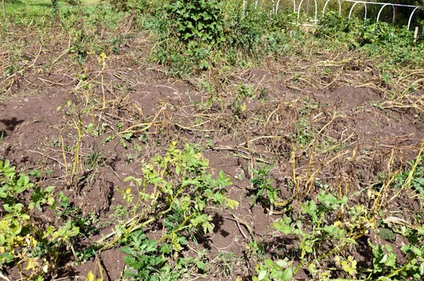

❶ Как копать картошку 🚩 как правильно копать огород 🚩 Сад и огород
 Войти Главная Квартира и дача Сад и огород 27 декабря 2018 Автор КакПросто!Как копать картошку
Картофель в России называют вторым хлебом. Трудно переоценить значение этого продукта в национальной кухне и в бюджете многих семей. Неудивительно, что многие люди стремятся выращивать собственную картошку на приусадебных участках. Ведь это такой великолепный запас на зиму. Однако чтобы труды увенчались успехом, нужно не только знать, как сажать картошку, но также как ее правильно копать и хранить. Статьи по теме: Как копать картошку Как выкопать картошку Окучивание картофеля: правила Вопрос Права собственности - 1 ответ Вам понадобится - лопата; - садовые вилы; - ведро; - мешки под картошку; - парниковая пленка или брезент. Инструкция 1 Для уборки картофеля по возможности выберите сухую погоду. Картошка, собранная в дождь из мокрой земли, хуже хранится и быстро начинает гнить. В средней полосе России картошку , в зависимости от сорта ( ранний или поздний), следует выкапывать в августе или сентябре. Приготовьте все необходимое для работы. Вам понадобятся лопата или садовые вилы, ведро, мешки под картошку, а также парниковая пленка или брезент. 2 Определить зрелость еще не выкопанного картофеля можно по состоянию ботвы. Если картофельные кусты стали жухнуть, желтеть и клониться к земле, картошка созрела, и ее можно выкапывать. Чтобы удостовериться в этом, подкопните один кустик и посмотрите на размер и состояние клубней. 3 Удобнее всего копать картошку следующим образом: подкопните землю лопатой или вилами на небольшом расстоянии от картофельного куста и немного приподнимите ее. Возьмитесь одной рукой за ботву и потяните ее вверх. Обязательно захватывайте весь куст целиком, а не отдельные ветви, чтобы не оторвать их. 4 Когда почувствуете, что куст поддается на ваши усилия и движется вверх, начинайте его немного встряхивать, чтобы осыпалась земля. В результате вы сможете вытащить всю клубневую систем кустика разом. Оторвите картофельные клубни от корней, отряхните их и положите в рядом стоящее ведро. Перейдите к другому кусту и продолжайте работу. 5 Если погода позволяет, картошку не следует сразу же ссыпать в мешки. Разложите на земле пленку или брезент и высыпайте на него выкопанные клубни. Пока вы работаете, картошка подсохнет и не начнет гнить в мешках. После того как выкопаете всю картошку, перед уборкой на хранение ее обязательно надо еще раз просушить как следует. Для этого в затененном сухом помещении высыпьте клубни тонким слоем на пол, застеленный газетами, брезентом или просто голый (но обязательно сухой), и оставьте на два-три дня. Полезный совет Выкопанные картофельные клубни во время просушки и хранения необходимо тщательно оберегать от дневного отсвета. Под воздействием солнечных лучей в них накапливается ядовитое вещество – соланин, которое не только придает горький вкус плодам, но и опасно для здоровья людей и животных. Определить наличие соланина можно по характерной зеленоватой окраске, покрывающей кожуру и мякоть клубней. Такую картошку нельзя употреблять в пищу. Связанная статья Когда можно копать молодую картошку после цветения Совет полезен? Статьи по теме: Как вырастить картофель без перекопки грунта Как понять, что пора копать картошку Когда копать картошку Добавить комментарий к статье Похожие советы Когда можно копать картошку на хранение Как и сколько хранить картофель Как и когда нужно окучивать картошку Через сколько дней после посадки можно копать картофель Нужно ли косить ботву картофеля после цветения Нужно ли обрывать цвет у картофеля Как выбрать время для окучивания картофеля Как правильно окучивать картофель на приусадебном участке Когда можно копать молодую картошку после цветения Можно ли копать картошку в дождь Когда окучивать картофель первый раз Можно ли в августе копать картошку Что делать с ботвой картофеля Как определить, что пришла пора копать картошку Как окучивать картофель Как окучивать картошку Как правильно копать Как хранить картофель К чему снится картошка Нужно ли обрывать цветы у картофеля во время цветения Надо ли обрезать ботву у картофеля Как хранить картофель Показать еще Медиакит Прайс-лист Связаться Присоединяйтесь к нам Новые советы от КакПросто Рекомендованная статья Как вырастить цветную капусту в 2018 году Считается, что цветная капуста введена в культуру в Средиземноморье, возможно, из капусты листовой сирийскими феллахами... Как выбрать бытовой обогреватель: 4 лучших варианта для вашего дома Как выбрать обои для детской: ТОП-5 безопасных материалов Лучшие материалы для укрытия многолетних цветов на зиму Пожелтение листьев у пеларгонии: причины и способы решения Все статьи Войти на сайт или Забыли пароль?Еще не зарегистрированы? This site is protected by reCAPTCHA and the Google Privacy Policy and Terms of Service apply.